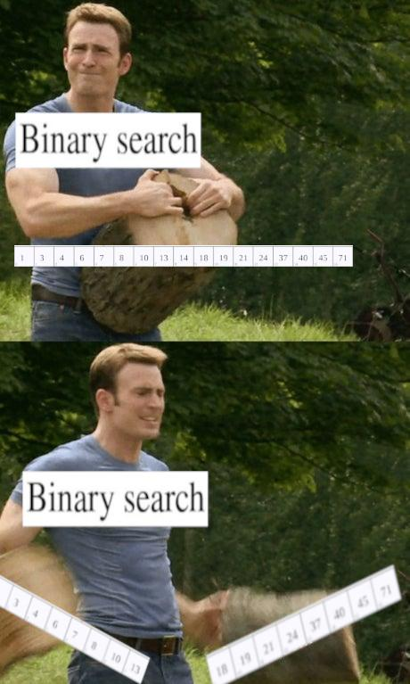

T3.1 Diviser pour régner⚓︎

L'image
gifci-dessus présente différentes étapes du déroulement d'un algorithme de rotation d'images inspiré d'un travail présenté par Laurent Abbal du lycée français de Tokyo, qui utilise l'approche diviser pour régner.L'image source représente l'oeuvre Matsuri Yatai Dragon du peintre japonais Hokusai. Elle est dans le domaine public et disponible sur https://commons.wikimedia.org.
Principe
La méthode diviser pour régner (en anglais divide and conquer) est une technique algorithmique de résolution d'un problème qui consiste à :
- décomposer le problème initial en (un ou) plusieurs sous-problèmes de taille inférieure et indépendants;
- résoudre chacun des sous-problèmes;
- combiner (éventuellement) les solutions des sous-problèmes pour obtenir la solution au problème initial.
La plupart du temps la résolution des sous-problèmes se fait de façon récursive.
Une impression de «déjà-vu»?
Nous avons déjà utilisé cette technique. Par exemple:
-
en première en étudiant la recherche dichotomique dans une liste triée; 
-
en terminale en étudiant les algorithmes sur les arbres binaires.
{kind=link}
Un autre exemple ? Dès le DS 0001:
| Exponentiation rapide | |
|---|---|
1 2 3 4 5 6 7 8 | |
Nous allons mettre en œuvre cette méthode sur quelques problèmes classiques...
1. Le tri fusion⚓︎
Algorithme du tri fusion (merge sort)
L'algorithme du tri fusion consiste à:
- couper le tableau à trier en deux moitiés;
- trier indépendammment en place chaque moitié;
- fusionner (to merge) les deux moitiés triées.
{kind=link}
Source: Gilles Lassus
Partie I: la fusion / merge
On veut pouvoir fusionner deux listes triées. Pour cela on construit une nouvelle liste, dans laquelle on ajoute successivement le minimum des plus petits éléments des deux listes. Il faut donc gérer deux indices: un pour chaque liste, où l'indice correspond à l'élément à comparer.
1 2 3 4 5 6 7 8 9 10 11 12 13 14 15 16 17 18 19 20 21 22 23 24 25 | |
Pouvez-vous estimer la complexité de cette fonction?
Partie II: le tri / sort
Reprenons l'algorithme du tri fusion: il faut d'abord couper le tableau en deux moitiés. On va utiliser les deux fonctions ci-dessous dont la liste renvoyée est à compléter en compréhension:
1 2 3 4 5 6 7 | |
Maintenant écrivons la fonction tri_fusion à proprement parler, qui va fusionner les deux moitiés de la liste qui ont été triées par fusion:
1 2 3 4 5 6 7 | |
Il est à noter que cette version du tri fusion ne trie pas en place, c'est-à-dire que la liste initiale à trier n'est pas modifiée et qu'une nouvelle liste, triée, est créée par la fonction tri_fusion. Exactement comme le fait la fonction sorted de Python.
>>> tab = [3, 4, 1, 6, 8, 7, 2]
>>> tri_fusion(tab)
[1, 2, 3, 4, 6, 7, 8]
>>> tab
[3, 4, 1, 6, 8, 7, 2]
On peut faire en sorte que le tri fusion trie en place une liste (comme la méthode sort de Python), c'est-à-dire qu'aucune autre liste ne sera créée, mais la liste initiale aura été triée.
On veut alors plutôt ce genre de comportement:
>>> tab = [3, 4, 1, 6, 8, 7, 2]
>>> tri_fusion(tab)
>>> tab
[1, 2, 3, 4, 6, 7, 8]
Pour cela, on utilise le caractère mutable d'une liste. Il faut faire en sorte de passer la liste en paramètre de la fonction fusion et de remplacer ses éléments un à un (plutôt que de créer une liste vide puis de la peupler), en gérant un indice de plus.
| Fusion en place | |
|---|---|
1 2 3 4 5 6 7 8 9 10 11 12 13 14 15 16 17 18 19 20 | |
La fonction tri_fusion se modifie alors ainsi:
| Tri fusion en place | |
|---|---|
1 2 3 4 5 6 7 | |
Exercice 1
En s'inspirant de ce qui a été fait en classe de première sur le tri par sélection , mesurer le temps d'exécution pour plusieurs tailles de listes construites aléatoirement (ou pas, à vous de voir) et construire un graphique pour estimer la complexité du tri fusion.
2. Le tri rapide⚓︎
Algorithme du tri rapide (quick sort)
L'algorithme du tri rapide consiste à:
- choisir une valeur pivot (le premier élément, le dernier, au hasard...);
- placer tous les éléments plus petits que le pivot avant les éléments qui sont plus grands que le pivot;
- trier récursivement chacune des deux parties.

Partie I : le tri
Un peu comme le tri fusion, la fonction de tri à proprement parler n'est pas très compliquée à écrire: elle suit l'algorithme donné à la lettre.
Si on dispose d'une fonction partition qui procède aux échanges successifs des éléments de la liste entre deux indices et qui renvoie la position du pivot (qui est nécessairement bien placé à l'issue de ce partitionnement), on obtient le code suivant:
1 2 3 4 5 | |
Partie II: la partition
L'étape délicate du tri rapide est celle qui consiste à réaliser le partitionnement de la liste à trier en 3 parts:
- les éléments inférieurs au pivot;
- le pivot;
- les éléments supérieurs au pivot.
Il faut noter qu'une fois partitionnée, le pivot est nécessairement à sa position définitive, c'est l'intérêt de cet algorithme...
Il existe plusieurs façons de réaliser ce partitionnement, et plusieurs façons de choisir le pivot. Nous choisirons systématiquement le pivot en dernière position et échangerons les valeurs inférieures au pivot en gérant leur indice d'échange. Une fois toutes les valeurs de la liste parcourues (et éventuellement échangées), cet indice d'insertion désigne celui du pivot, un dernier échange interviendra.
Compléter le code suivant:
1 2 3 4 5 6 7 8 9 10 11 12 13 14 15 16 | |
Exercice 2
Il manque la fonction echange... Écrivez-la.
Exercice 3
Même question qu'à l'exercice 1 sur le tri fusion...
3. Génération d'un labyrinthe⚓︎
Dans ce problème, on considèrera qu'un labyrinthe est composé initialement d'une grille de cellules possédant chacune quatre murs. La cellule en haut à gauche est de coordonnées \((0, 0)\).
{kind=link}
Pour créer un labyrinthe à partir de cette grille, on va utiliser la méthode diviser pour régner en appliquant récursivement une méthode creer_labyrinthe sur des sous-grilles en coupant la grille en deux puis en reliant les deux sous-labyrinthes en créant un passage entre eux.
{kind=link}
Algorithme de génération
Plus précisément, voici l'algorithme à utiliser:
creer_labyrinthe(i, j, di, dj):
''' génère un labyrinthe de dimension (di, dj) à partir de la case (i, j) en haut à gauche '''
Si di = 1 ou dj = 1:
enlever tous les murs reliant les cases situées sur la ligne droite entre (i, j) et (i+di−1, j+dj−1)
Sinon
Si di >= dj:
tirer au hasard c entre 1 et di−1
appeler creer_labyrinthe(i, j, c, dj)
appeler creer_labyrinthe(i+c, j, di−c, dj).
Sinon
tirer au hasard c entre 1 et dj−1
appeler creer_labyrinthe(i, j, di, c)
creer_labyrinthe(i, j+c, di, dj−c).
Enlever un mur aléatoirement entre les deux sous-labyrinthes créés.
Partie 1: Mise en place
On modélise le labyrinthe à l'aide de deux classes:
- une classe
Cellulequi contient un unique attributmursde typedictdont les clés sont'N','E','S'et'O'et dont les valeurs sont des booléens; - une classe
Labyrinthequi contient un unique attributgrillede typelistqui contient des cellules et dont il faut compléter la méthodeconstruire_grille.
1 2 3 4 5 6 7 8 9 10 11 | |
Pour contrôler notre travail, il faut un outil graphique pour dessiner les labyrinthes. On utilisera naturellement le module pygame.
| Modèle à utiliser et à compléter au fur et à mesure | |
|---|---|
1 2 3 4 5 6 7 8 9 10 11 12 13 14 15 16 17 18 19 20 21 22 23 24 25 26 27 28 29 30 31 32 33 34 | |
Partie 2: Affichage
Pour chaque cellule de la grille du labyrinthe, il faut tracer un segment pour chaque mur existant (valeur True pour les clés du dictionnaire).
 Pour passer des coordonnées \((i, j)\) d'une cellule dans la grille aux coordonnées de dessin dans la fenêtre
Pour passer des coordonnées \((i, j)\) d'une cellule dans la grille aux coordonnées de dessin dans la fenêtre pygame, il faut multiplier par la longueur choisie pour le côté des cellules (nommée cote_cellule dans le code précédent).
L'indice de ligne i correspond aux ordonnées de la fenêtre de dessin et l'indice de colonne j aux abscisses...
Par exemple pour tracer le mur nord d'une cellule de coordonnées \((i, j)\) dans la grille, il faut tracer un segment entre les points de coordonnées [cote_cellule*j, cote_cellule*i] et [cote_cellule*(j+1), cote_cellule*i].
Compléter la méthode afficher (de Labyrinthe):
1 2 3 4 5 6 7 8 9 | |
Partie 3: création d'un passage
Il s'agit de passer les valeurs à False pour les murs correspondant au passage entre deux cellules. Tout d'abord il faut repérer si le passage est horizontal ou vertical...
Compléter la méthode creer_passsage (de Labyrinthe) :
1 2 3 4 5 6 7 8 9 10 11 12 | |
Partie 4: création du labyrinthe
Utiliser l'algorithme établi en début d'activité pour écrire la méthode creer_labyrinthe.
1 2 3 4 | |